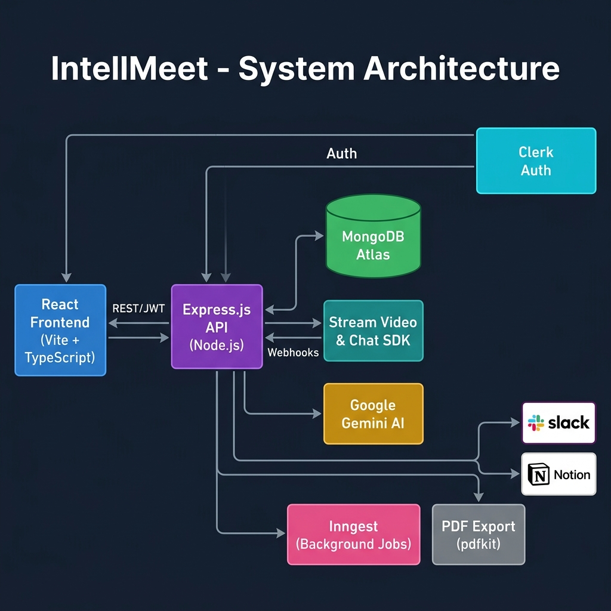

An AI-powered enterprise meeting intelligence platform that transcribes, summarizes, and converts meetings into trackable action items — automatically.
IntellMeet is a full-stack, AI-powered video conferencing and meeting intelligence platform built for enterprise teams, startups, and distributed organisations. The central problem it solves is straightforward: the knowledge from most meetings evaporates the moment the call ends.
IntellMeet addresses this by combining live video infrastructure (Stream SDK), a large-language-model AI pipeline (Google Gemini 2.5 Flash), and a modern team collaboration layer — so every meeting automatically produces a structured summary, extracted action items, and a searchable transcript, with zero effort from participants.
The project was developed as part of Zidio Development and is designed to be benchmarked against commercial products such as Zoom, Google Meet, Linear, Loom, and Notion.
| ID | Feature | Description |
|---|---|---|
| F-01 | Live Video Meetings | Instant, scheduled, and join-by-code meetings via Stream Video SDK with adaptive Google Meet–style tiling for 1–N participants. |
| F-02 | Real-Time Transcription | Host-toggled during the call. Once enabled, transcription runs live with per-speaker attribution in the collapsible sidebar. |
| F-03 | Gemini AI Summarization | Structured executive summary (3–5 bullets) generated from the full transcript via Gemini 2.5 Flash, triggered automatically on call end. |
| F-04 | Action Item Extraction | AI detects actionable tasks with assignee name, due-date, and confidence scoring (high / medium / low). |
| F-05 | Kanban Task Board | Full task management with priority, due dates, assignees, status columns, and comments. One-click promotion of AI action items into tasks. |
| F-06 | Waiting Room & Access Control | Hosts admit or deny participants individually or open the meeting to anyone with the link. |
| F-07 | In-Meeting Chat | Stream Chat alongside video with emoji reactions and persistent message history. |
| F-08 | Screen Sharing | Full-screen or window sharing with a dedicated layout that auto-reflows the participant grid. |
| F-09 | Recordings Library | Per-session recordings with playback, duration tracking, and linked timestamped transcript segments. |
| F-10 | PDF Export | Server-side meeting notes and executive summary export via pdfkit, streamed directly to the browser. |
| F-11 | Slack & Notion Integration | Push summaries and action items to Slack channels or Notion pages, configured per team. |
| F-12 | Multi-Team Workspaces | Admin/member roles, team switching, and invite-based onboarding with all data scoped per team. |
| F-13 | Analytics Dashboard | Meeting cadence, engagement scores, AI rating trends, and task velocity charts via Recharts. |
| F-14 | Post-Call Rating | Star-based meeting quality feedback captured immediately after every call, feeding into analytics. |
| F-15 | Fallback Processing Pipeline | Inngest background job recovers gracefully if a transcript arrives late or a Stream webhook is missed. |
| F-16 | Secure Authentication | Full auth lifecycle via Clerk (sign-up, sign-in, sessions, password) with JWT verification on every API route. |
| Category | Technology | Version | Rationale / Alternatives Considered |
|---|---|---|---|
| UI Framework | React | 19.x | Concurrent rendering, latest hooks model. Vue 3 and Svelte were considered but team familiarity favoured React. |
| Language | TypeScript | ~6.0 | Full type safety and IDE support; caught API contract bugs before runtime. |
| Build Tool | Vite | 8.x | Sub-second HMR, ESM-native output. Webpack was ruled out for slower development experience. |
| Styling | Tailwind CSS + shadcn/ui | 3.x | Utility-first speed combined with accessible, unstyled component primitives. |
| Server State | TanStack Query | 5.x | Caching, background refetch, and optimistic updates. SWR was considered but TanStack Query is more feature-complete. |
| Client State | Zustand | 5.x | Lightweight, no boilerplate. Redux Toolkit was considered over-engineered for this scope. |
| Authentication | Clerk React SDK | 5.x | Managed auth with pre-built UI and multi-session support. Auth.js requires more configuration. |
| Video / Chat | Stream Video React SDK | 1.x | WebRTC abstraction with built-in transcription webhooks. Daily.co and Agora were evaluated but Stream's API surface was most suitable. |
| Animations | Framer Motion | 12.x | Declarative spring physics and layout animations with minimal code. |
| Charts | Recharts | 3.x | React-native, composable, and tree-shakeable. |
| Routing | React Router DOM | 7.x | Nested routes and protected route wrappers out of the box. |
| Icons | Lucide React | 1.x | Tree-shakeable with consistent stroke-width across all icons. |
| Category | Technology | Version | Rationale / Alternatives Considered |
|---|---|---|---|
| Runtime | Node.js | 18+ | Shared JavaScript ecosystem with the frontend; excellent I/O throughput for webhook-heavy workloads. |
| Framework | Express.js | 5.x | Mature, minimal, great middleware ecosystem. Fastify and Hono were considered but Express offered broader community support. |
| Database | MongoDB + Mongoose | 9.x | Schema flexibility for evolving meeting and task models. PostgreSQL was considered but NoSQL better suited the document-centric data shape. |
| Auth Middleware | Clerk Express | 1.x | JWT verification, user sync, and lifecycle webhook events handled by a single package. |
| Video / Chat | Stream Node SDK | 0.7.x | Server-side call creation, user token generation, and transcript retrieval. |
| AI | Google Gemini 2.5 Flash | ^0.24 | Low latency, native JSON-mode output, and best-in-class summarisation quality. |
| PDF Generation | pdfkit | 0.19.x | Server-side streaming PDF with no browser dependency. Puppeteer was ruled out for its heavier runtime footprint. |
| Background Jobs | Inngest | 3.x | Event-driven functions with automatic retries and no queue infrastructure required. BullMQ + Redis would have added operational complexity. |
| Service | Provider | Purpose |
|---|---|---|
| Frontend Hosting | Vercel | Global CDN, atomic deployments, preview URLs per pull request, zero-config Vite support. |
| Backend Hosting | Render | Managed Node.js web service with auto-deploy from the GitHub main branch. |
| Database | MongoDB Atlas M0 | Managed cluster with automatic backups and Atlas Search capability. |
| Authentication | Clerk | User management, JWT sessions, and user-lifecycle webhooks. |
| Video Infrastructure | Stream | WebRTC media servers, transcription, recording storage, and chat. |
| AI | Google Cloud / Gemini API | Generative AI for meeting summarisation and action-item extraction. |

Figure 1 — IntellMeet high-level system architecture
Figure 2 — Meeting intelligence pipeline from call start to action items
IntellMeet is structured as a two-tier web application: a React single-page application hosted on Vercel's CDN communicates with a Node.js/Express REST API hosted on Render. Both layers are protected by Clerk for authentication and authorisation.
call.transcription_ready webhook to the Express backend.Monorepo scaffold (frontend + backend), environment configuration, Express server setup, MongoDB Atlas connection via Mongoose, ESM module configuration, CORS and dotenv wiring.
Full Clerk integration: sign-up, sign-in, profile, and session management. Clerk middleware applied to all protected routes. User sync to MongoDB on first login via Inngest webhook. React ClerkProvider setup with auth pages and route guards.
Full REST API for sessions, teams, tasks, and invites. Team creation and switching, admin/member roles. Task board data model (priority, due dates, assignees, comments). Meeting scheduling. TanStack Query and Zustand stores on the frontend.
Stream webhook receiver for call.transcription_ready and call.recording_ready events. Gemini 2.5 Flash integration with JSON-mode response and robust fallback regex parsing. Action item extraction with assignee, due-date, and confidence fields. Inngest fallback polling pipeline for delayed webhooks.
Adaptive video grid (Google Meet–style tiling), in-meeting chat sidebar, live closed captions panel, screen share with dedicated layout, waiting room with admit/deny controls, post-call rating modal, and participant list with roles.
Recordings library with playback and duration tracking. RecordingDetail page with timestamped transcript segments. Full Kanban task board UI. AI summary detail page with one-click action-item promotion. Server-side PDF export via pdfkit streamed to the browser.
Slack webhook integration for per-team summary notifications. Notion API sync for meeting pages. Analytics dashboard using Recharts: meeting cadence, rating distribution, engagement metrics, and task velocity. Deployed to Vercel (frontend) and Render (backend) with production environment variables.
| Measure | Implementation Detail | OWASP Category |
|---|---|---|
| JWT Authentication | Every API route protected by clerkMiddleware(). Tokens verified server-side; no client-side trust is assumed. |
A01 — Broken Access Control |
| Environment Secrets | All API keys stored in .env files, excluded from version control via .gitignore. No secrets are committed to the repository. |
A02 — Cryptographic Failures |
| Mongoose Schema Validation | All data models enforce type constraints, required fields, and enum values — preventing malformed or injected documents from reaching the database. | A03 — Injection |
| CORS Whitelist | Backend restricts cross-origin requests to the known frontend URL defined in the CLIENT_URL environment variable. No wildcard origins are permitted. |
A05 — Security Misconfiguration |
| Stream Token Scoping | User tokens for Stream are generated server-side with limited call scopes. Clients never hold Stream API secrets directly. | A07 — Identification & Auth Failures |
| Webhook Signature Verification | Incoming Stream webhooks are verified using the Stream signing secret before any transcript or recording data is processed. | A08 — Software & Data Integrity Failures |
import() keeps the initial bundle lean, improving time-to-interactive for first-time visitors.sessionId, teamId, and clerkId fields for fast lookups on the most common query patterns.| # | Challenge | Solution Applied |
|---|---|---|
| 1 | Webhook timing. Stream's transcription_ready webhook sometimes arrives 30–120 s after call end, causing the AI pipeline to run on missing data. |
Inngest fallback job: a call.ended event schedules a background function that waits 90 s, checks whether the transcript has arrived, and re-triggers summarisation if not. |
| 2 | Gemini JSON instability. Despite setting responseMimeType: "application/json", Gemini occasionally wraps output in markdown code fences. |
Double-layer parsing: first attempt JSON.parse() directly on the response; fall back to regex extraction /\{[\s\S]*\}/ if that fails. An error is thrown only if neither approach succeeds. |
| 3 | Adaptive video layout. Replicating Google Meet's dynamic grid for varying participant counts and screen-share states required complex layout logic. | Custom React component using CSS Grid with a participant-count-based column formula and a dedicated screen-share lane that activates automatically when sharing begins. |
| 4 | Render cold starts. Free-tier Render instances spin down after 15 min of inactivity, causing 30+ second delays on the first request. | Added a public GET /health endpoint for monitoring. Cold-start limitation is documented; migration to Railway or Fly.io is listed on the roadmap. |
| 5 | Clerk–Stream identity mapping. Clerk and Stream use separate user ID systems; keeping them in sync across meetings, recordings, and transcripts required a custom mapping layer. | A resolveParticipants utility on the backend cross-references Clerk user records against Stream call participant data to produce a unified participant list for each session. |
| Layer | Platform | Configuration |
|---|---|---|
| Frontend | Vercel | Auto-deploy from GitHub main; global CDN; preview deployments per pull request; zero-config Vite support. |
| Backend API | Render | Managed Node.js web service; auto-deploy from GitHub main; npm start as the start command. |
| Database | MongoDB Atlas M0 | Managed free-tier cluster; automatic backups; Atlas Search–ready for future full-text search. |
| Target | Steps on push to main |
|---|---|
| Vercel (Frontend) | npm install → tsc -b && vite build → deploy to edge CDN. Preview URL generated per pull request. |
| Render (Backend) | npm install → node server.js → rolling restart validated by health check. Instant rollback on failure. |
GET /health. Public endpoint returning { status: "ok", timestamp }, used by Render's built-in health monitor with automatic restart on failure.| Variable | Service | Purpose |
|---|---|---|
| CLERK_SECRET_KEY | Clerk | Server-side JWT verification. |
| CLERK_PUBLISHABLE_KEY | Clerk | Frontend auth initialisation. |
| STREAM_API_KEY / SECRET | Stream | Call creation, user tokens, and webhook signature verification. |
| GEMENI_API_KEY | Google Gemini | AI summarisation API access. |
| DB_URL | MongoDB Atlas | Database connection string. |
| INGEST_EVENT_KEY / SIGNING_KEY | Inngest | Background job authentication. |
| CLIENT_URL | CORS | Frontend origin for the CORS whitelist. |
| Name | Role | Key Contributions |
|---|---|---|
| Shashank Raj | Frontend & Product Architecture | React UI architecture, Vite configuration, Meeting Room (adaptive grid, captions, waiting room), Dashboard, Analytics page, AI Summary view, product vision, and design system. |
| Tanuj Gupta | Backend & Infrastructure | Express API design, Stream webhook handlers, Gemini AI integration, Inngest pipeline, Render deployment, and MongoDB schema design. |
| Dara Saiteja | Frontend Development | Kanban task board, Recording Detail page, Onboarding flow, and shadcn/ui component integration. |
| Gaurav Kumar | Backend Development | Team management controllers, invite system, Slack and Notion integrations service, pdfkit PDF generation, and backfill/diagnostic scripts. |
ai.service.js, integrations.service.js) cleanly separates business logic from HTTP controllers.summarizeAndPersist wipes previous action items before reinserting — safe to re-run without producing duplicate data.aiProcessingStatus: "failed" without affecting the call experience.| Priority | Feature | Description | Estimated Effort |
|---|---|---|---|
| High | Persistent Hosting | Migrate backend from Render free tier to Railway or Fly.io to eliminate cold-start latency. | 1 week |
| High | Real-Time AI Coaching | Live suggestions during meetings, such as talk-time balance alerts and question prompts. | 2–3 weeks |
| Medium | Multi-Language Transcription | Support for non-English meetings via Stream's language settings and Gemini's multilingual capability. | 1–2 weeks |
| Medium | Calendar Integration | Google Calendar and Outlook sync for scheduling meetings directly from the dashboard. | 2 weeks |
| Medium | Mobile Application | React Native or Flutter app for joining meetings and viewing summaries on mobile devices. | 6–8 weeks |
| Low | Full-Text Search | Search across all meeting transcripts and summaries using MongoDB Atlas Search. | 1 week |
| Low | Meeting Templates | Pre-defined agenda templates (standup, sprint review, 1:1) with tailored AI prompts. | 1 week |